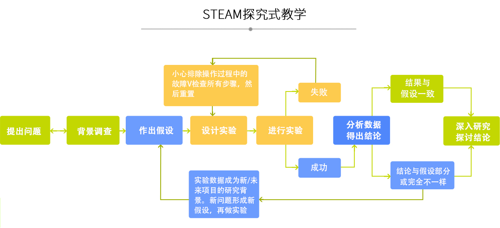
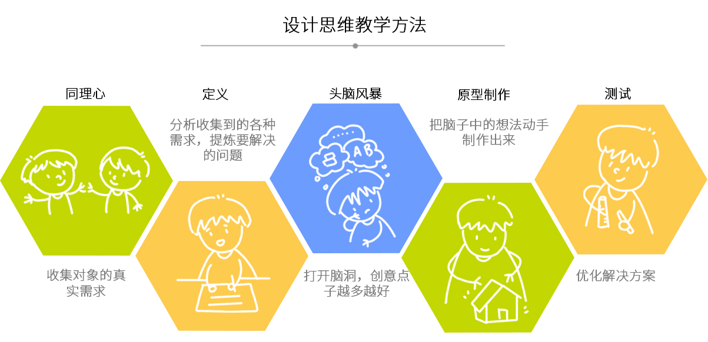
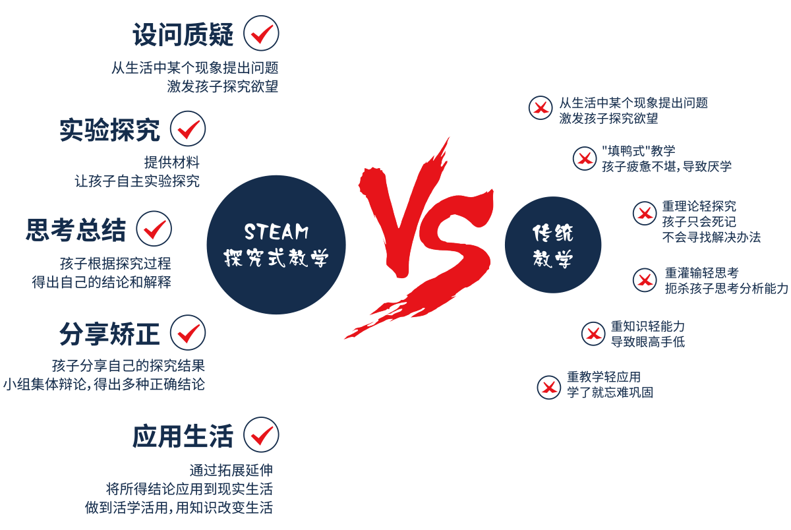

充分考虑学生各年龄段的特点与认知情况，结合我国《义务教育—小学科学课程标准》、《3-6岁儿童学习与发展指南》对应知识难度的划分以及实验操作难度的划分设计课程体系。
| 年龄 | 3-6岁 | 6-9岁 | 9-12岁 |
|---|---|---|---|
|
学习时期 |
习惯养成的关键时期 |
探索吸收知识，学习思维培养的关键时期 |
知识综合运用、学科交叉、创造力培养的关键时期 |
|
学科范围 |
科学兴趣 |
学科构建 |
综合应用 |
|
培养重点 |
保持好奇心，以及探索世界和学习科学的兴趣 |
学习浅显的、与日常关系密切相关的知识与研究方法，并尝试将其用于解决身边的实际问题 |
形成用科学提高生活质量，愿意参与和科学有关的社会问题的讨论与活动 |
依据教育部颁发的《3-6岁儿童学习与发展指南》与《义务教育—小学科学课程标准》所划分的科学四大领域十九个大主题近200个知识点进行产品体系的整体设计。
项目制探究式学习是指在既定学习项目中，在教师的管理组织和引导下，让学生作为主体，主动参与、动手动脑、积极体验、经历科学探究的过程以获取科学知识。在探究过程中，教师通过提问、小组讨论等形式对课堂进行组织引导和激励。
